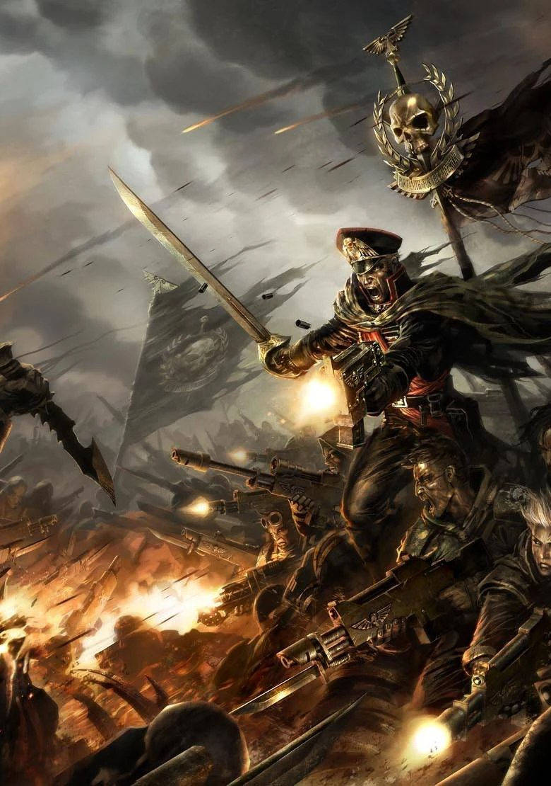
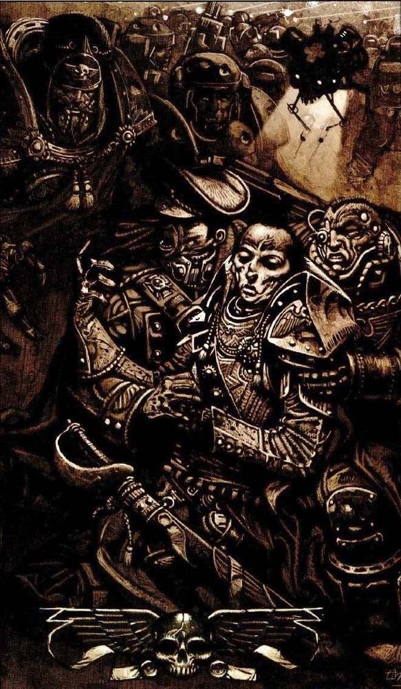
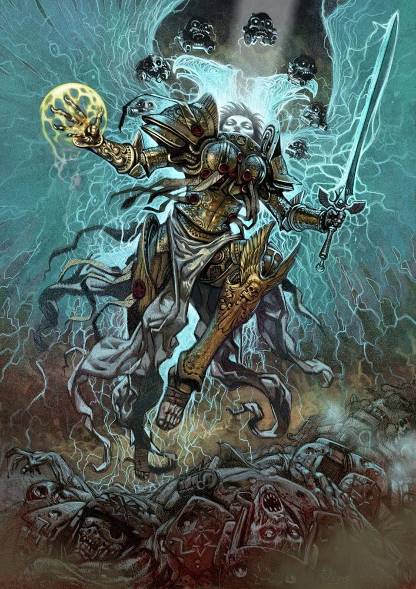
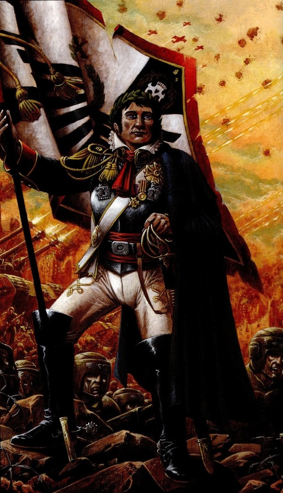

Sabbat Worlds Crusade
| Sabbat Worlds Crusade | |
|---|---|
| An Imperial Crusade of the late 41st millennium | |
 A Blood Pact officer leads an assault against crusade lines. Captured pict, Khan Group | |
| Date | 755.M41 – after 791.M41[a] |
| Location | Sabbat Worlds sector, rimward Segmentum Pacificus |
| Result | Most of the sector retaken in the first three decades; the war against the Archon and his magisters continued thereafter |
| Belligerents | |
| Imperium Imperium of Mankind | Archenemy Blood Pact Sons of Sek Kith, Infardi and other cult armies |
| Commanders and leaders | |
| Warmaster Slaydo † Warmaster Macaroth Lord Militant Hechtor Dravere † Lord Militant Cybon Lord Militant Humel Lord General Bulledin Lord General Lugo Lord General Van Voytz Ibram Gaunt | Archon Nadzybar † Archon Urlock Gaur Anakwanar Sek Heritor Asphodel † Enok Innokenti † Shebol Red-Hand Qux of the Eyeless Sholen Skara |
| Strength | |
| At the outset nearly a billion Guardsmen, six Space Marine Chapters, Titan Legions and a crusade fleet | The armies of a whole sector, numbering in the billions |
| Casualties and losses | |
| Millions on each side. Cociaminus alone cost some eight million Imperial soldiers | |
The Sabbat Worlds Crusade is an Imperial Crusade launched in 755.M41 to reconquer the Sabbat Worlds, a sector of more than a hundred inhabited systems on the rimward edge of the Segmentum Pacificus, from the forces of Chaos. It is among the largest Imperial military efforts of the 41st millennium. It was planned and led for its first ten years by Warmaster Slaydo, who was killed in single combat with the enemy commander on Balhaut in 765.M41, and thereafter by Warmaster Macaroth, whom Slaydo named as his heir.[1][2]
The crusade freed the worlds of the Newfound Trailing in its first decade and pushed into the Cabal Systems in its second, while defending a long flank in the Khan Group against the magisters of the new Archon, Urlock Gaur, and the rival warlord Anakwanar Sek. Its soldiers have fought on hundreds of worlds. The miraculous appearance of Saint Sabbat on Herodor in 773.M41 and the deeds of the Tanith First and Only under Ibram Gaunt are among its best-known episodes. Imperial records show that the crusade was still in progress in the last decade of the 8th century of the millennium.[1][3]
Background
[edit]The Sabbat Worlds
[edit]The region was annexed in the 35th millennium by a crusade that began in 500.M35 and lasted 105 years, led by a young woman from the world of Hagia who had received a vision of the Emperor. She was canonised as Saint Sabbat, and the sector took her name. By the 37th millennium it was home to some five trillion people and a prosperous interstellar economy. It was also exposed to the dark beyond the galactic rim, and through the 38th millennium it fought a series of wars against the Chaos-worshipping tribes of the so-called Sanguinary Worlds, which lay further rimward. The Administratum came to call it a troublesome province.[1]
The fall of the sector
[edit]In the first centuries of the 41st millennium a warlord who took the title of Archon united the Sanguinary tribes and led them into the sector. At first the attacks were thought to be a return of the old border wars. After 600.M41 it became clear that the Ruinous Powers meant to take the whole region back from the Imperium that Saint Sabbat had founded. The Segmentum Pacificus High Command, fighting eight other major campaigns at the time, underestimated the threat and chose to sacrifice parts of the region to hold others. The defence failed. By 740.M41 the Administratum classified the sector as unstable and hazardous, and in 741.M41 it suspended the Civitas Imperialis there and withdrew the sector governor to a neighbouring sector. Some Imperial worlds held out alone for decades.[1]
Slaydo
[edit]Few in the Imperial high command wanted to spend the resources that reconquest would need. The exception was Lord Militant Slaydo, who had argued for a crusade since 732.M41 and regarded the abandonment of the Sabbat Worlds as a crime. Saint Sabbat was his personal patron, and his officers recorded that he spoke of walking in her path. His victories in the Khulan Wars of 752–754.M41 made him popular with the rank and file of the Astra Militarum, and in 755.M41 the High Lords of Terra named him Warmaster and gave him the crusade. He was then about 150 years old, and his only stated fear was that he would not live to finish it.[1][2]
Slaydo's crusade (755–765.M41)
[edit]Operation Redrake
[edit]Slaydo spent most of 755.M41 at Khulan with his staff, studying and rejecting more than thirty plans of attack. His armada gathered at Khulan, San Sargo, Kazin II, Arvinx Cardinal and the Bethan Halo. On the 266th day of 755.M41 he gave the signal for Operation Redrake, named for a many-headed serpent, in which four fleets struck at once at Formal Prime, Long Halent, Onscard and Indrid, to divide the enemy's response and win a quick victory for morale. Long Halent fell at once and Onscard within three weeks. Formal Prime took eleven weeks and cost the Guard some two hundred dead for every metre of ground, until an assault by the White Scars broke the defenders.[1]
Operation Newfound
[edit]The second phase, Operation Newfound (756–764.M41), aimed at the worlds of the Newfound Trailing. The crusade found the enemy entrenched in fortified populations led by commanders called magisters, and harried by raiding fleets and small mobile bands that attacked supply lines. On Ashek II the magister Heritor Asphodel fought the Guard with daemonic war engines that the soldiers called Woe Machines, and was defeated only after a squadron of Battle Titans under the Imperator-class Imperious Corporalis arrived. On Ambold Eleven the Iron Snakes diverted from their course to rescue a Guard army trapped after its general had been killed, and took two hives in a week. On Sverren, in 758.M41, Lord General Bulledin offered his resignation after a costly failure before Nefr City, and received from Slaydo a dispatch that read only "Do it again". He did, and took the city.[1]
The campaign on Cociaminus, which began in 760.M41 and dragged on for more than a decade, became known as the world that refused to die. It cost some eight million Imperial soldiers, more than any other single world of the crusade, and the life of Lord Militant Vichres in 762.M41.[1]
Balhaut
[edit]Balhaut had been Slaydo's objective from the beginning, and he refused all advice to bypass it. In 764.M41 the Archon Nadzybar tried to draw the crusade into a trap at the world of Fabia. Slaydo answered with a deception of his own, staging false fleet movements and planting false orders, and struck at Balhaut instead in 765.M41. The assault, called Operation Hell Storm, went in four waves: a fleet that approached hidden behind the local star, a troop wave that waited at the system's edge, a main battle fleet that attacked the high and low anchorages, and the landing armies.[1]
In the city of Balopolis three Imperial commanders were killed or wounded in fifty-eight hours, and command passed to a staff officer named Macaroth, whom Slaydo promoted to brevet Marshal by dispatch. Macaroth held the line and broke into the city centre. On the tenth day Slaydo himself led the attack on the Palace of the Oligarchy and met Nadzybar and his bodyguard on the Western Palisade. In a duel that witnesses say lasted no more than eleven minutes, the Warmaster took two mortal wounds and killed the Archon.[1][2]

Slaydo lived long enough to see Balhaut won. On his deathbed he named the young Marshal Macaroth as his successor, passing over the Lords Militant, and promoted a commissar who had served him well, Ibram Gaunt, to the rare rank of colonel-commissar. His last recorded words were "I am done, and yet I am undone". Shortly afterwards Gaunt was sent to the forest world of Tanith to take command of its new regiments. Tanith was destroyed by a Chaos fleet on the day of their founding, and Gaunt took off only the survivors of the First.[2][3]
Macaroth's crusade
[edit]The new Warmaster
[edit]The appointment of Macaroth caused bitter resentment among the senior officers, and Lord Militant Hechtor Dravere, the most prominent of them, plotted against him. Dravere was killed on Menazoid Epsilon in 765.M41, and Macaroth held his command. In the next decade he became regarded as one of the foremost commanders of the age, known for his instinct, intellect and willingness to take risks.[2][3]
The enemy fleeing Balhaut seeded many worlds with garrisons and cults. Among those caught up were Verghast, Aexe Cardinal and the Forge World of Urdesh, which fell in 766–767.M41 and whose stockpiled weapons and armour were turned on the crusade for years. Fortis Binary, Voltemand, Monthax and Presarius were retaken in a four-year advance. On Verghast, Gaunt took command of the defence of the hive city of Vervunhive and led the strike that killed Asphodel.[1][3]
The Cabal Salient (765–773.M41)
[edit]Macaroth's objective was not a world but a region: the Cabal Systems and the fortress world of Morlond beyond them, where he expected the enemy to gather. He drove a salient deep into enemy space, which left both its flanks exposed. In 767.M41 General Onator lost twenty divisions on Parthenope to the magister Qux of the Eyeless, the worst single defeat of these years.[1]
The death of Nadzybar had begun a war of succession among his magisters that killed more of their own soldiers, it is said, than the crusade did. By 771.M41 the victor was an obscure warlord from the edge of the sector, Urlock Gaur, who commanded the Blood Pact, an army of Chaos-sworn soldiers organised on the model of the Imperial Guard and bound to him by oaths cut in their palms. Gaur stopped the Imperial advance into the Cabal Systems and struck at its supply routes. Macaroth spent a year restoring his lines, then took Morlond in late 773.M41.[1][4]
The Khan Group and Herodor (773–775.M41)
[edit]While Macaroth drove on Morlond, the magisters Anakwanar Sek and Enok Innokenti struck through the Khan Group on his flank in late 773.M41, intending to cut the crusade in two and decapitate it. Three worlds were nearly depopulated. The Imperial counter-attack was decided in three theatres. On Enothis Lord Militant Humel faced Sek and drove him off the world in early 774.M41. On Khan III Lord General Bulledin fought the magister Shebol Red-Hand. On the shrine world of Herodor, one of the holy worlds of Saint Sabbat, a force under Lord General Lugo held the city of Civitas Beati against Innokenti.[1][4]
Imperial accounts say that on Herodor a young woman came forward claiming to be the Saint reborn, and that her presence rallied the defenders to rout Innokenti's host and kill him. The Ecclesiarchy proclaimed her a Living Saint. Lugo's critics later questioned the claim, and Imperial authorities have not settled it. The victory on Herodor and the fall of Morlond turned the course of the war, and news of the Saint spread through the crusade.[b][1][4]

The Second Front
[edit]Sek alone kept his forces together. Determined to replace Gaur as Archon, he raised an elite army of his own, the Sons of Sek, trained on the occupied agri-world of Gereon by Noches Sturm, a former Imperial Lord General who had defected. To hold the flank, Macaroth formed a Second Front of armies left to fight Sek at any cost. Its campaigns included the war for Lyubov in 778.M41, a world on a main jump route that supplied the Archenemy, and the liberation of Gereon, whose resistance had first been reached by a team under Gaunt.[1][3]
Urdesh and the later war
[edit]In 781.M41 Gaunt and his regiment were lost after a deviant warp jump. In their absence the false-flag operations they had carried out, which had set Gaur and Sek against each other, were credited with saving the crusade, and Gaunt was promoted Lord Militant in his absence, being believed dead. When the Ghosts re-emerged into realspace in 791.M41 they found the forge world of Urdesh, recovered from the enemy in 772.M41, under fresh assault by Sek, who now called himself the Anarch. There Gaunt was confirmed in his rank before thirty Marshals and Lords Militant, and Macaroth later named him First Lord Executor Militant of the crusade. The battle for Urdesh was fought around the Warmaster's own headquarters and was regarded by both sides as decisive for the war.[3][2]
Accounts of the battle's end differ in detail, and the record of the crusade after it is incomplete. Gaur remained at large, and the crusade was not declared complete before the Great Rift divided the Imperium in 999.M41.[a][2]
Forces
[edit]The Astra Militarum supplied the bulk of the crusade's strength. Its regiments came from dozens of worlds, among them the Hyrkan, Volpone, Urdeshi, Pardus, Vitrian, Belladon, Verghastite and Phantine regiments, the Jantine Patricians and the Tanith First and Only. Air wings of the Imperial Navy, among them the Phantine "Umbra" wing, fought the air war over many worlds. The six Space Marine Chapters included the White Scars and the Iron Snakes. The Ecclesiarchy sent preachers, and the Adeptus Mechanicus supplied Titans and munitions from the forge worlds of the sector once they were retaken.[1]
The enemy was not a single army. Each magister commanded his own host, from the cult armies of the Infardi and the Kith to the soldiers of the Blood Pact and the Sons of Sek, who were drilled, uniformed and equipped much like Imperial Guardsmen, often with weapons taken from Imperial forge worlds. Warbands of Chaos Space Marines, among them World Eaters, fought alongside them in several campaigns.[4]

Legacy
[edit]The Sabbat Worlds Crusade restored to the Imperium a sector of trillions that had been written off, and showed that a reconquest on that scale was still possible in the late 41st millennium. It also showed how long such a war could last. Slaydo's plan had assumed years; the crusade lasted decades, and the enemy it fought learned to fight like the Imperium itself.[2]
Within the Imperial Cult the crusade is remembered for the return of Saint Sabbat, and its shrines on Hagia and Herodor draw pilgrims from across the segmentum. Within the Astra Militarum it is remembered for its regiments, above all for the Tanith First and Only, whose record of commando and infiltration warfare is cited in later training manuals.[3]

See also
[edit]Notes
[edit]- ^ a b The crusade was still in progress at the latest date for which full records reached the Segmentum Pacificus command. Communications with the region since the opening of the Great Rift have been incomplete.
- ^ The identity of the woman of Herodor was examined by the Ordo Hereticus and by the Ecclesiarchy, whose findings differ. Her later fate is recorded in sources that remain sealed.
References
[edit]- ^ a b c d e f g h i j k l m n o p q Munitorum Summary of the Sabbat Worlds Crusade (rev. 790.M41). Departmento Munitorum, Segmentum Pacificus.
- ^ a b c d e f g h Lexicanum Martialis. Officio Militaris.
- ^ a b c d e f g Regimental History of the Tanith First and Only (c. 790.M41). Officio Prefectus.
- ^ a b c d Interrogation Digests on the Archon and His Magisters (sealed). Ordo Hereticus, Sabbat Worlds Conclave.